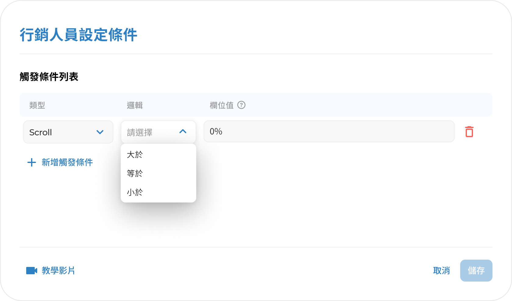
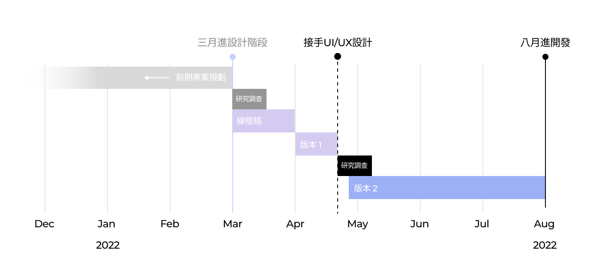

Tracking setup without the marketing jargonCustomer Journey Platform
A marketing automation platform connecting email, SMS, landing pages and social media. I took over the redesign mid-project, reviewed the problems in version 1 and redid the user research — turning a tracking feature only marketing experts could configure into a flow anyone can understand, with results visible right away.

The Problem
I interviewed ad sales reps, tried competing products myself, and ran usability tests with a prototype. The problems clustered around setting up the tracking feature.
I asked 3 users to try the version 1 design and complete one task — “trigger tracking when the visitor scrolls 50% down the page” — and recorded what they did and how they felt at each step:

Too complex
Setting it up correctly required marketing knowledge, so most users struggled.
Unclear guidance
Text-only descriptions couldn’t show what actually happens on the page.
No instant feedback
Users couldn’t confirm the result right away, which led to mistakes.
Needs & Solutions
Tracking redesign
See the result while you set it up
The redesign focused on the parameter settings in the tracking feature, with three main changes.
Before

After
Parameters
- 0%
- 10%
- 20%
- 30%
- 40%
- 50%
- 60%
- 70%
- 80%
- 90%
- 100%
Preview
Design Rationale
To address the three pain points from the interviews, I changed how parameters are set in three ways:
- Simpler flow: Removed the “logic” step — users just pick a scroll depth, so no marketing knowledge is needed.
- Interactive preview instead of text: A live preview shows where tracking will trigger, so users understand the result as they set it.
- Dropdown instead of free input: Typing values one by one was tedious and error-prone; a dropdown cuts both errors and time.
Outcomes & Process
Design Process

- Reviewing version 1
Another designer had led the early phase. I first reviewed the problems in version 1, then set the redesign direction.
- Interviews & competitor analysis
Interviewed our in-house ad sales reps and tried competing products myself.
- Mockups & prototype
Defined the UI style and built mockups and a prototype in Figma.
- Before-and-after usability tests
Compared setup time and user sentiment before and after, and aligned specs with front-end and QA.
Revised User Journey
The same 3 users completed the same task: steps dropped from 4 to 3, and time fell from about 3 minutes to 1. Compared with the version 1 journey above, seeing the preview while choosing a value became the most positive moment.

Setup time
3→1minTime to complete tracking setupUser satisfaction
↑Clearly more positive moments across the user journeyInput errors
↓Fewer input errors after switching to a dropdown* Before and after the redesign, 3 users each completed the same task — triggering tracking at 50% scroll depth — and I compared completion time and experience.
Reflection
I joined this redesign mid-project. Looking back, two things stood out:
- Review the problems before choosing a direction. The early design was already done, so instead of starting over, I mapped the existing problems and ran user research. Once it was clear the pain points centered on tracking, I narrowed the redesign to parameter settings — solving the core problem first within a tight timeline.
- Showing the result beats explaining it. Version 1 used text to explain “greater than, equal to, less than,” and users still found it confusing. Once a live preview showed the trigger point, setup time dropped from about 3 minutes to 1, and the link between action and result became intuitive.
A good settings interface doesn’t make users learn the rules — it lets them see the result at a glance.